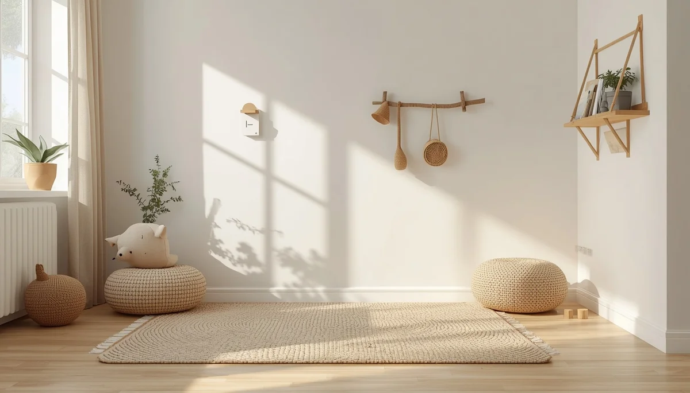

Desarrollo psicomotor: hitos y señales de alerta en la primera infancia
El desarrollo psicomotor durante los primeros años de vida constituye un proceso fascinante en el que la maduración neurológica y la exploración del entorno van de la mano. Cada niño cuenta con su propio ritmo madurativo, pero conocer los hitos principales y las señales de alerta permite a las familias acompañar este despliegue con seguridad, ofreciendo un espacio de movimiento libre y respetuoso. Pincha en cada tarjeta para profundizar en cada tema.

Comprender la maduración neurológica y motora
Descubre cómo se entrelazan el sistema nervioso y el tono muscular para permitir que el niño conquiste su propio cuerpo paso a paso.

El valor del movimiento libre y espontáneo
Por qué evitar corsés ortopédicos, andadores o posturas forzadas potencia una seguridad corporal firme y una autonomía genuina.
Hitos evolutivos: del volteo a la marcha autónoma
Un recorrido orientativo por las grandes etapas motoras sin caer en comparaciones estériles que generan ansiedad en la familia.

Preparar el hogar para la exploración segura
Pautas para diseñar un espacio físico adaptado, despejado y rico en estímulos táctiles y motores que invite al descubrimiento.

Rutinas diarias que potencian la coordinación
Cómo integrar momentos de juego activo, manipulación de objetos y equilibrio dentro de las actividades cotidianas del día a día.
Acompañar las caídas, los tropiezos y la frustración
Cómo gestionar el miedo de los adultos ante los golpes propios del aprendizaje motor para transmitir confianza en lugar de temor.

Psicomotricidad fina y gruesa en la escuela infantil
La importancia del juego corporal, la manipulación fina y la expresión gestual como cimientos indispensables para el posterior aprendizaje escolar.

Señales de alerta y cuándo consultar con especialistas
Identificación objetiva de indicios físicos o asimetrías que requieren una valoración profesional temprana para garantizar un apoyo adecuado.
🌱 Continúa profundizando en el desarrollo y bienestar infantil
Para acompañar la crianza y los hábitos de bienestar de forma completa, te sugerimos explorar estos recursos:
- 🎙️ Escucha el podcast: Límites con amor y regulación emocional (Ep. 07)
- 📥 Descarga el recurso práctico: Ritual de Sueño Tranquilo (PDF)